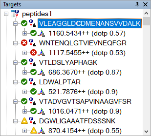
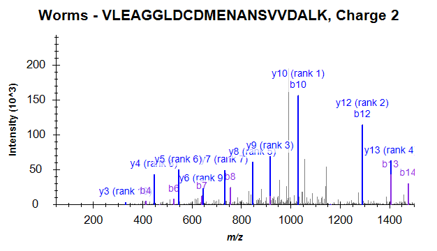
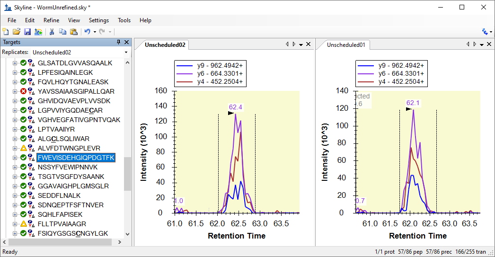
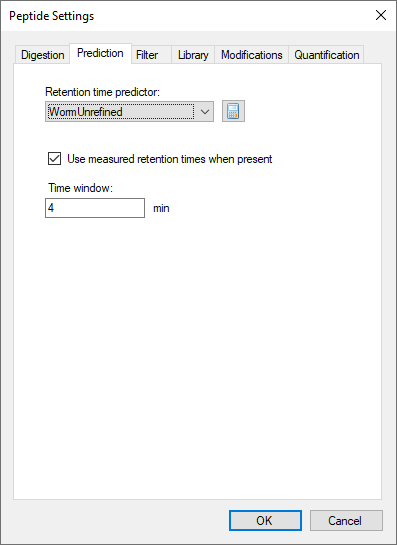
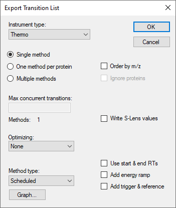
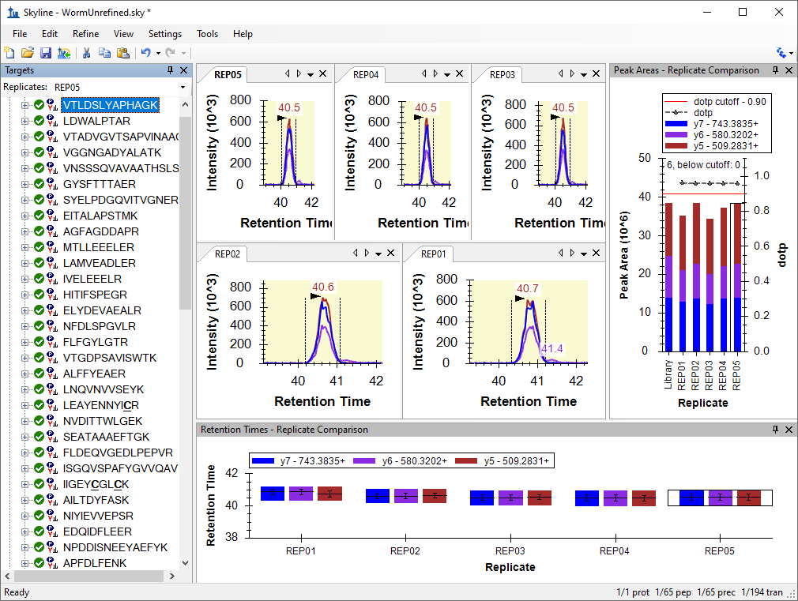

This tutorial will introduce the features available in the Skyline Targeted Mass Spec Environment for refining instrument methods for Selected Reaction Monitoring (SRM, also referred to as Multiple Reaction Monitoring, or MRM) mass spectrometry experiments. Though, many of the concepts introduce will also apply to Parallel Reaction Monitoring (PRM) or Data Independent Acquisition (DIA).
When an ideal set of target peptides for a given protein is unavailable or unknown, Skyline makes it easy to create methods that can measure a broad range of peptides in search of the most measurable peptides in a sample matrix. Results from these initial measurements can then be imported into Skyline, and Skyline can help refine your method to improve your next iteration of measurements.
We call this the Targeted Method Refinement Cycle and often present the idea as shown below:
By iterating over this cycle, you can start with a broad hypothesis including dozens to thousands of proteins you are interested in monitoring, and quickly narrow your list down to the best peptides, product ions and instrument settings for achieving your experimental goals. When your starting list is large, however, you will benefit from starting with statistical methods such as group comparisons and advanced peak detection models introduced in other tutorials.
This tutorial will step you through two-and-one-half iterations of this refinement cycle and leave you with ideas for further iterations that may help in creating a fully refined quantitative assay.
To start this tutorial, download the following ZIP file:
https://skyline.ms/tutorials/MethodRefine.zip
Extract the files in it to a folder on your computer, like:
C:\Users\brendanx\Documents
This will create a new folder:
C:\Users\brendanx\Documents\MethodRefine
If you have been using Skyline prior to starting this tutorial, it is a good idea to revert Skyline to its default settings. To do so:

The document settings in this instance of Skyline have now been reset to the default.
Since this tutorial covers a proteomics topic, you can choose the proteomics interface by doing the following:

Skyline is operating in proteomics mode which is displayed by the protein icon  in the upper
right-hand corner of the Skyline window.
in the upper
right-hand corner of the Skyline window.
Now you are ready to start by opening the WormUnrefined.sky file:
To get started:
Skyline should present graphs showing both a corresponding MS/MS spectrum from a library and time-intensity chromatogram data measured for product ions y3 – y15 of this peptide on an instrument in the MacCoss lab:

Note that the MS/MS library spectrum associated with each peptide was derived from experiments conducted on an ion trap mass spectrometer.
In the peptide view on the left, Skyline displays green, yellow, and red dots left of the peptide sequences. There are peak quality icons, and they indicate:
The chromatogram data was originally imported into this document from 39 Thermo RAW files. To understand why 39 separate sample injections were required for a single measurement of the peptides in this document, first note the numbers in the lower right corner of the Skyline window. You can see that the document contains 225 peptides and 2096 transitions, which cover y3 – y(n-1) for each peptide (where n is the number of amino acids in the full peptide sequence).
The goal of the Skyline document you are viewing was to help determine which peptides can be measured in a specific target matrix, and which are the best transitions for the measurable peptides. Larger numbers of transitions per peptide allow us to gain confidence that a given peak actually measures the peptide of interest. This confidence is measured by calculating a dot-product correlation between the peak intensities of the transitions for the peptide of interest and the library spectrum1, 2 for the same peptide.
To see how we generated the transition lists required for measuring the peptides in this document, perform the following steps:
The Export Transition List form should look like:

If you use Windows Explorer to view the contents of the MethodRefine folder, you will see that it now contains 39 new CSV files (worm_0001.csv – worm_0039.csv). Each is about 4K in size and contains a list of no more than 59 transitions ready for import into an unscheduled Thermo TSQ method.
Note: Modern triple quadrupole instruments can measure hundreds of transitions concurrently with dwell times as low as 2 milliseconds, but on the TSQ Quantum Ultra used to collect these files in 2009, these were appropriate settings.
If you would like to learn how to import the initial set of instrument output files for this experiment, you will have to download another, supplementary ZIP file (36 Meg). This ZIP file contains the 39 Thermo RAW files (161 Meg uncompressed) collected at the MacCoss lab to measure the transition lists you just exported in the above section.
The original MethodRefine.zip file you downloaded contained a high-performance data file WormUnrefined.skyd, which already has all the data Skyline requires from these files. If you prefer to continue using the existing data file, you may skip to the next section.
To re-import the data yourself, download the ZIP file:
https://skyline.ms/tutorials/MethodRefineSupplement.zip
Extract the files into the folder you used before. This will create a new folder like:
C:\Users\brendanx\Documents\MethodRefineSupplement
In Skyline, perform the following steps to remove the previously cached data:
Both the chromatogram chart and the peak quality icons have been removed from the Skyline interface.
Now you are ready to import the original data yourself. You don’t have to import it all at once. This can be useful for checking your data before acquisition is completed for all of the transition lists exported from these large, unrefined documents. In this tutorial, you will import the data in two batches.
First, perform the following steps:
Skyline will begin importing those 15 files, and you will see its progress indicated in the Import Results form like the one below:

While Skyline stores this data into its high-performance data file, you are free to continue reviewing the results. You could even begin refining the document, but for this tutorial, you should finish importing all 39 results files by doing the following (though, on a modern computer this is likely to go so fast, import will complete before you can do other work):
Once Skyline completes the import, you are ready to start the next section, with a data file that matches the one this tutorial came with originally.
One way to begin refining a document is by visually reviewing each peptide and deciding what to keep and what to discard based on the rich information Skyline provides. This is how the Skyline document in this tutorial was originally refined for our ASMS 2009 poster. It took less than one hour to review these peptides, and choose the best three transitions for the ones with well-defined peaks closely matching the library spectra.
Looking at the Skyline document for this tutorial, one question you might ask about the first peptide is whether Skyline missed a peak better than the one it is currently zoomed in on. To answer this question, you can do the following to zoom out:
Here you should pause and take a moment to memorize the keyboard short-cuts for
These will allow you to switch quickly between a close-up view of the currently selected peak, and the entire range of time for which the instrument measured the transitions you are inspecting.
For the first peptide in the document, that full range looks like:

This looks like pretty noisy data at first glance, but if you would like to look deeper, you can click and drag a box around any of the large peaks labeled with their retention times.
Once you are convinced that none of these contain a genuine measurement of this peptide, remove the first peptide from the document by doing the following:
It can also be useful when inspecting chromatogram peaks to have some idea of the expected retention time for a peptide. The Sequence-Specific Retention Calculator (SSRCalc) 3.03 has been integrated into Skyline to make this possible. Though other methods of retention time prediction are described in other tutorials. To see a linear regression graph of the relationship between the SSRCalc hydrophobicity score and measured peptide retention time, do the following:
Skyline will display a graph like this:

Notice the red point positioned on the current Regression Refined line. This point shows the SSRCalc score and measured time for the currently selected peptide. The highlighted point will change as you select different peptides in the Skyline Targets view.
By default the graph uses a threshold of r = 0.9 for the residuals of the refined regression, removing points from the regression and labeling them outliers until the threshold is reached. You can adjust this threshold by doing the following:
Skyline recalculates the regression, marking more peptides as outliers to change the graph to:

You can create a new linear equation for retention time prediction by doing the following:
Skyline presents the Edit Retention Time Predictor form pre-populated with information from the retention time regression graph, including only the refined regression data (146 peptides), and the same slope, intercept and time window. The time window Skyline suggests is 4 standard deviations obtained from the residuals of the regression, which should contain about 95% of the 146 peptides.
Skyline also picks the calculator that yields the best fit (r closest to 1.0) for the data. Currently the choice is just SSRCalc 3.0 trained on columns using reverse-phase packing material with either 100 or 300 Angstrom pore size. In the MacCoss lab, we use packing material with 90 Angstrom pore size, and SSRCalc 3.0 (100Å) usually provides the best fit.
Skyline will add an indicator of the predicted retention time for the selected peptide to its chromatogram graph, as shown below (you may need to move the regression graph out of the way to see this):

The shaded rectangle around this indicator shows the window (15.7 minutes) you accepted in the Edit Retention Time Predictor form. Anything outside the shaded rectangle is over 2 standard deviations from the predicted value.
Before leaving the Retention Times regression graph to return to manual refinement of this document, notice that many of the outlier points lie on the x-axis. This means Skyline found no peak at all for the peptide in question. To understand why:
Skyline will highlight the point in red and scroll the Targets view to show the newly selected peptide (YLAEVASEDR). Press the Escape key to return to the Targets view, which should now look something like:

The absence of even a red dot peak quality icon indicates that no measurements were present for these 7 peptides in the RAW files imported into this document. That was certainly a surprise when we first imported the RAW files into this document. There are 39 transition lists and 39 RAW files. What happened?
With a little more exploration, Skyline makes the issue clear:
The chromatogram graph should now look something like:

Notice the toolbar that has been added at the top, with the File choice list. If you click on this list, it will show that both worm_0027.RAW and worm_0028.RAW contained measurements for this peptide.
Although there may be reasons in the future to measure a peptide twice in a single sample injection, at present a chromatogram graph showing the File list is a good indication that a mistake has been made somewhere. Either you have imported files measured as separate replicates into the same logical replicate in Skyline, or, as in this case, the sample list repeated a transition list for two output files and accidentally omitted another transition list. If you scroll the peptide view up, you can see that this happened another time for worm_0015.RAW and worm_0016.RAW.
You could delete these peptides without data now, but you can do this as part of a single refinement operation later in this tutorial. For now, you can leave them and move on:
Even if you may eventually use more powerful operations available in Skyline to refine your document, it is a good idea to understand how you might choose peptides and transitions individually, using the information Skyline provides. To prepare for initial manual review of this document, do the following:
This last operation exposes the “dotp” value in the peptide view, which is a dot-product similarity metric4, 5 between the measured SRM peak areas and the MS/MS library peak intensities. The closer this value is to 1.0, the better the match.
Note: Since Skyline 2.1 all dotp values in Skyline have used the “normalized spectral contrast angle” calculation described by Toprak, et al. MCP 2014. They are no longer actually dot-product values.
The peptide view should now look like this:

The dot-product (0.57) of the selected peptide is not that good, but all 11 y-ions measured have nicely co-eluting peaks:
If you look at the MS/MS library spectrum graph, you can see an issue that might be causing the poor dot-product:

Notice that the two most intense peaks in the MS/MS library spectrum are annotated with both y- and b-ions (y10, b10 and y12, b12). The Thermo TSQ instrument, used for the SRM measurements, is known not to preserve b-ions well, which means the b10 and b12 components of these peaks will be absent in the SRM measurements.
The rank numbers on the left are the MS/MS library spectrum peak ranks, while the bracketed numbers to the far right are the SRM peak ranks. These numbers might help you sort out whether you believe the measurements on these transitions correspond to the appropriate peaks in the MS/MS library peptide identification. In this tutorial, however, you need to remove this peptide:
The next peptide (WNTENQLGTVIEVNEQFGR) was clearly not measured, since its best peak group contains peaks for less than half of its transitions, producing a 0.34 dot-product. You can delete it also.
The next three peptides are very nice examples of candidates that meet the criteria for this level of refinement. All three peptides have peaks for all transitions, and they have dot-products of 0.87 or better. If you were looking to choose just 3 transitions for each peptide, the first peptide would be easy.
In the next peptide LDWALPTAR, note that the MS/MS library spectrum rank 3 and 4 peaks are nearly identical, and keep the three most intense SRM peaks [1], [2], [3].
This should leave you with:
Looking at the next peptide and its transitions, you will see that y3 had the third largest peak area in SRM, but y13, with the fourth largest peak, was not much smaller. If you delete all but the four most intense peaks, you can press Shift-F11 to zoom out and see that neither the y3 or y13 transition encountered much noise or other features. A y13 ion, however, is generally more selective than a y3 ion (since it contains more of the complete peptide sequence), and in refinement you should be trying to produce the most selective method you possibly can. For this tutorial, keep y14, y13 and y11 for this peptide.
You could continue in this way, deleting the next two peptides and keeping the one after that, keeping the transitions with the highest signal, least noise, and best selectivity. Or, you could use the Skyline refinement form to perform a lot of initial filtering in one operation.
The Skyline Refine form automates the most common refinement operations. The kind of refinement you have been doing manually so far in this tutorial can be performed in a single operation by doing the following:
This will leave you with 80 peptides and 240 transitions, and they should all be pretty high quality. Take a moment to review them in the chromatogram graph by doing the following:
This may be a little aggressive, however. To take a less aggressive approach that combines initial automated refinement with subsequent manual review, you can now perform the following additional steps:
This reduces the number of peptides to 127 and preserves enough transitions to keep the dot-product numbers useful in distinguishing peak quality. You can make the final refinement pass manually, taking into account factors the Refine form may still be missing.
The Skyline document you are editing was used in real experiments in the MacCoss lab in the spring of 2009; you are following the same steps we took then. However, at that time, Skyline did not have the Refine form, nor was it capable of calculating dot products. At that time, therefore, we manually reduced the list to 86 peptides for the next iteration of the refinement cycle. You can follow along with the choices made then by doing the following:
This should remove all of the unrefined results and the chromatogram graph.
This will start Skyline importing 2 new unscheduled replicates from the 2 folders (Unscheduled01 and Unscheduled02) in the MethodRefine folder. Each folder contains 2 RAW files with the unscheduled chromatograms of 3 transitions for every measurable peptide remaining after the first refinement pass.
The current document still contains a lot of transitions that were not measured in these RAW files. To reduce the document to only the transitions measured, do the following:
This will leave you with 86 peptides and 255 transitions.
These peptides might have been better measured in 4 separate injections, rather than just 2. However, as the purpose of this next phase of refinement was to determine expected retention times for scheduling, we decided to allow longer cycle times and fewer points across the elution curves to reduce the number of injections required.
You can create transition lists similar to the ones we used to measure these peptides by doing the following:
The Export Transition List form should look like this:
If you look in the MethodRefine folder, you will see two transition list CSV files (Unscheduled_0001.csv and Unscheduled_0002.csv). These could be used to collect new data like the files you just imported.
To review the unscheduled retention time runs you imported:
Skyline should be showing charts for both replicates you created, as shown below:

Given these measured retention times, you can get an overview of how Skyline might schedule these transitions by doing the following:
Skyline presents a graph like:
From this graph, you can see the number of concurrent transitions the instrument will measure over your full chromatography run using several possible time windows around the previously measured retention times. The larger the time window, the more concurrent transitions you will see. For this document, a window of 5 minutes causes a maximum number of concurrently measured transitions of about 60. Depending on the speed of your instrument, it should be possible to measure all the remaining peptides in a single injection.
Choosing the time window you will actually use for your scheduled transition lists depends on reproducibility of your chromatography. If you schedule too narrow a window to account for the variance in the retention times of your peptides, you will see truncated or missing peaks. Before creating a scheduled transition list, make sure you have a good understanding of the variance in your chromatography.
We used a 4 minute window in this experiment to allow single-injection replicates without negatively impacting the dwell times or cycle time when the maximum number of transitions are measured concurrently. You can do the same by performing the following steps:
The Peptide Settings form should look like:

The Export Transition List form should look like:

In the MethodRefine folder, you will find a new transition list file (Scheduled.csv) for scheduled SRM of the remaining peptides. If you look at the file in Excel, you can see that start and stop times, 4 minutes apart, have been added in columns D and E:

You are now ready to begin another cycle of refinement of this SRM method. In the experiment you are following, we chose to begin running multiple technical replicates to become more familiar with the peptides we were measuring and any potential issues they might still have, such as:
To review the data for the 5 injections we measured for this method, perform the following steps:
This should remove the unscheduled replicates and their chromatogram graphs.
Skyline creates a tab for each of the 5 replicates and begins importing the data, displaying progress in graphically and in the status bar at the bottom of the Skyline window.
When the import is complete, you can see that some of the peptides measured in the unscheduled runs were removed for these scheduled runs because they lack the colored dots. Again, you can reduce the document to just the peptides that were measured by doing the following:
To prepare for reviewing these data, do the following:
Adjust splitters and window sizing until the Skyline window looks like this:

You can now use the Down-Arrow key to review the data collected for these peptides. Other tutorials give more attention to analysis of multi-replicate refined SRM methods.
In this tutorial, you have been introduced to the powerful tools available in Skyline for creating new targeted proteomics methods and refining them for use in multi-replicate quantitative studies. You have traversed the Targeted Method Refinement Cycle over 2 iterations, and you should be able to use this process to begin exploration of your own proteomics hypotheses. Subsequent refinements might include optimizing instrument parameters like collision energy (CE), introducing synthetic labeled internal standard peptides for improved quantitative accuracy, or running calibration curves. Look for other Skyline tutorials and other Skyline features to help you make the most of your targeted proteomics experiments.
1. Prakash,A. et al. Expediting the development of targeted SRM assays: Using data from shotgun proteomics to automate method
development. J Proteome.Res. 2009.
Ref Type: In Press
2. Sherwood,C.A. et al. Correlation between y-type ions observed in ion trap and triple quadrupole mass spectrometers. J. Proteome. Res. 8, 4243-4251 (2009).
3. Krokhin,O.V. Sequence-specific retention calculator. Algorithm for peptide retention prediction in ion-pair RP-HPLC: application to 300- and 100-A pore size C18 sorbents. Anal. Chem. 78, 7785-7795 (2006).
4. Stein,S.E. & Scott,D.R. Optimization and Testing of Mass-Spectral Library Search Algorithms for Compound Identification. JASMS 5, 859-866 (1994).
5. Tabb,D.L., MacCoss,M.J., Wu,C.C., Anderson,S.D., & Yates,J.R., III Similarity among tandem mass spectra from proteomic experiments: detection, significance, and utility. Anal. Chem. 75, 2470-2477 (2003).